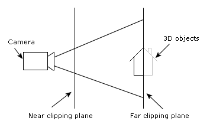
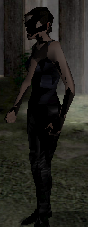

The 3D page in SceneEdit allows you to attach the geometry file to your game scene and select which camera should be used (in case the geometry file contains multiple cameras).
Normally the 3D geometry is used for navigating actors in the scene, but if you check the "Find path using 2D elements only" checkbox, your actors will be searching path exactly the same way as 2D characters, i.e. using blocked regions and waypoints as described in the scene creation tutorial. This can simplify designing some scenes. Note, though, that you always have to supply a walkplane and camera in the 3D geometry even if you're using 2D path-finding.
There are also some additional options available in case of troubleshooting common problems with 3D geometry:
Normally, WME reads the came FOV (field-of-view) from the 3ds file you provide. But since some 3D packages seem to incorrectly export this value (namely Cinema 4D), SceneEdit allows you to manually change the FOV to a more appropriate value. To do so, check the "Override camera FOV" checkbox and then use the slider to set the right value. If you enable the "Display scene geometry" option, you can visually match the geometry with he background image.
Hint: you can use keyboard to move the slider more precisely than dragging it by mouse.
As you probably know, the 3D geometry contains waypoints, i.e. the points used for actors' navigation within the scene. When WME loads the scene, it drops all the waypoints to the floor automatically. Or rather slightly above the floor, so that the actors are able to overcome bumps on the ground. Depending on the scale of your scene geometry, this default height may be to small or too big. For example, if you use very small scale, the waypoints may be dropped above the blocked areas and your actors will walk through them. In that case you'll need to set the "waypoints height" field to some lower value.
Again, if you enable the "Display scene geometry" option, you can visually check the position of the waypoints within scene as you change the "waypoints height" value.
Clipping planes are invisible planes used to limit what the camera can "see". See the following figure:

Everything outside the two clipping planes is clipped. WME uses some default values for the clipping planes, but these values may not work good if your scene uses too small or too large scale. If your 3D actors display artifacts similar to those on the following picture (parts of the model are cut off), you will need to adjust the clipping planes:

The values specify the distance of each plane to your camera, in world units. Change the values appropriately to your scene geometry scale to get rid of the display artifacts.
To restore the default values, set the clipping plane values to -1.
This field specifies the maximum shadow detail level to be used in this scene. This way you can for example limit scene to flat shadows, if the scene isn't designed for stencil shadows. See the Shadows chapter for more information about shadow types.